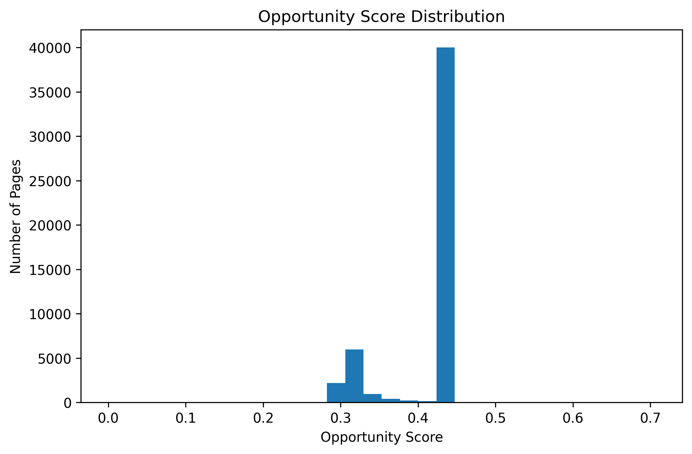
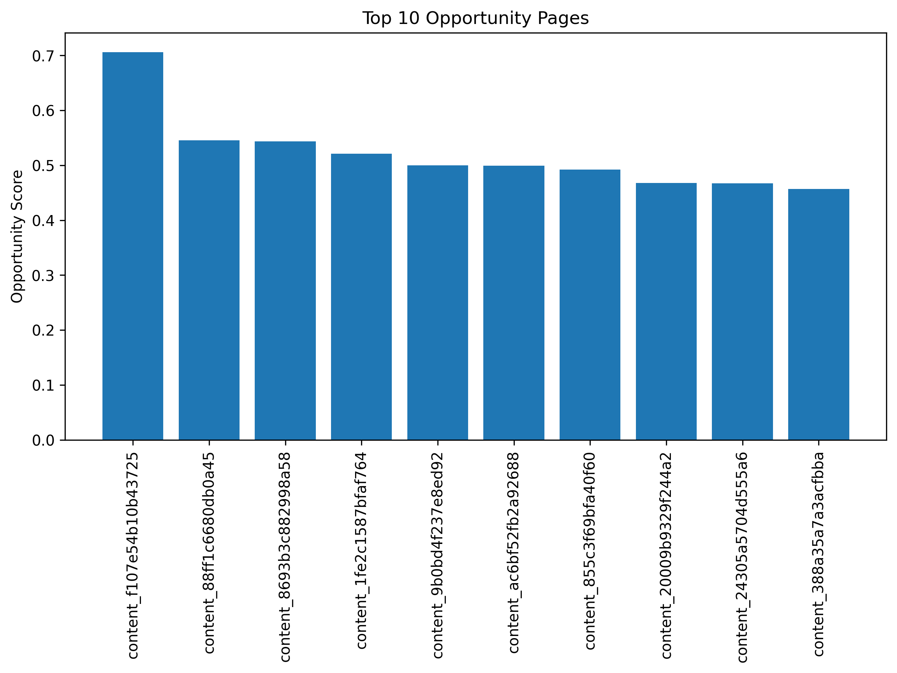

Author: Rohith M
Track: FlyRank ML Internship – Refresh / Content Opportunity Scoring
This project develops a Content Opportunity Scoring Engine using search intelligence data from the FlyRank Internship Warehouse. The framework combines Google Search Console and Google Analytics 4 metrics to identify pages that should be prioritized for content refresh. Features such as impressions, click-through rate, average ranking position, and engagement are combined into a weighted Opportunity Score. Each page is assigned reason codes and optimization recommendations. The resulting rankings provide a simple decision-support system for SEO and content optimization.
Organizations often manage thousands of content pages, making it difficult to determine which pages should be refreshed first. This project proposes a rule-based Content Opportunity Scoring Engine that prioritizes pages using search visibility and engagement signals. The objective is to help content teams focus their optimization efforts on pages with the highest potential impact.
Missing GA4 values were replaced with zero, while missing average search positions were replaced with 100. No client names, domains, or private information were used.
A weighted scoring formula was used to rank pages according to optimization opportunity. The score combines impressions, CTR, ranking position, and engagement into a single value. The weights were manually selected for decision-support purposes.


The Opportunity Score successfully ranks content pages and highlights pages that may benefit from content updates and SEO improvements.
This project uses a rule-based scoring approach rather than a predictive machine learning model. The Opportunity Score is intended to support content prioritization and should not be interpreted as a prediction of Google's ranking algorithm or future search performance.
GitHub Repository: https://github.com/Rohith84/Flyrank-Week-1-
Notebook: work/FlyRank_Content_Opportunity_Scoring.ipynb
Built on the FlyRank ML Internship dataset.